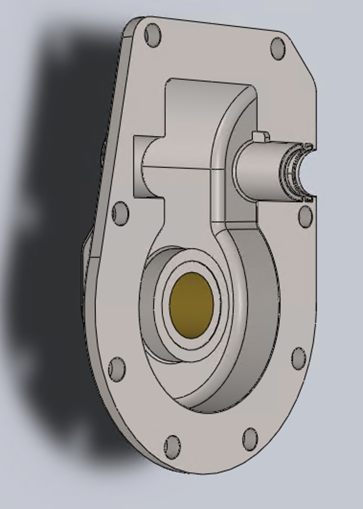
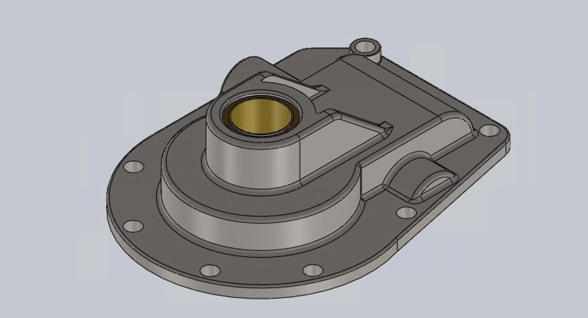
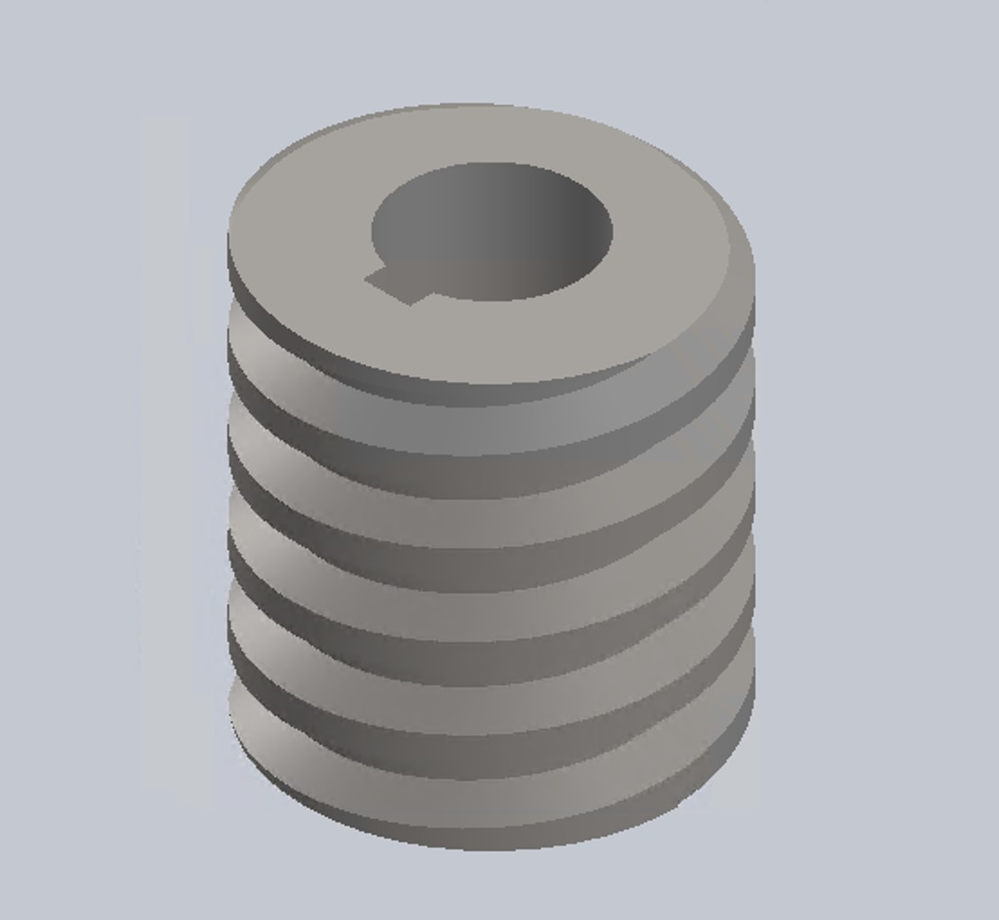
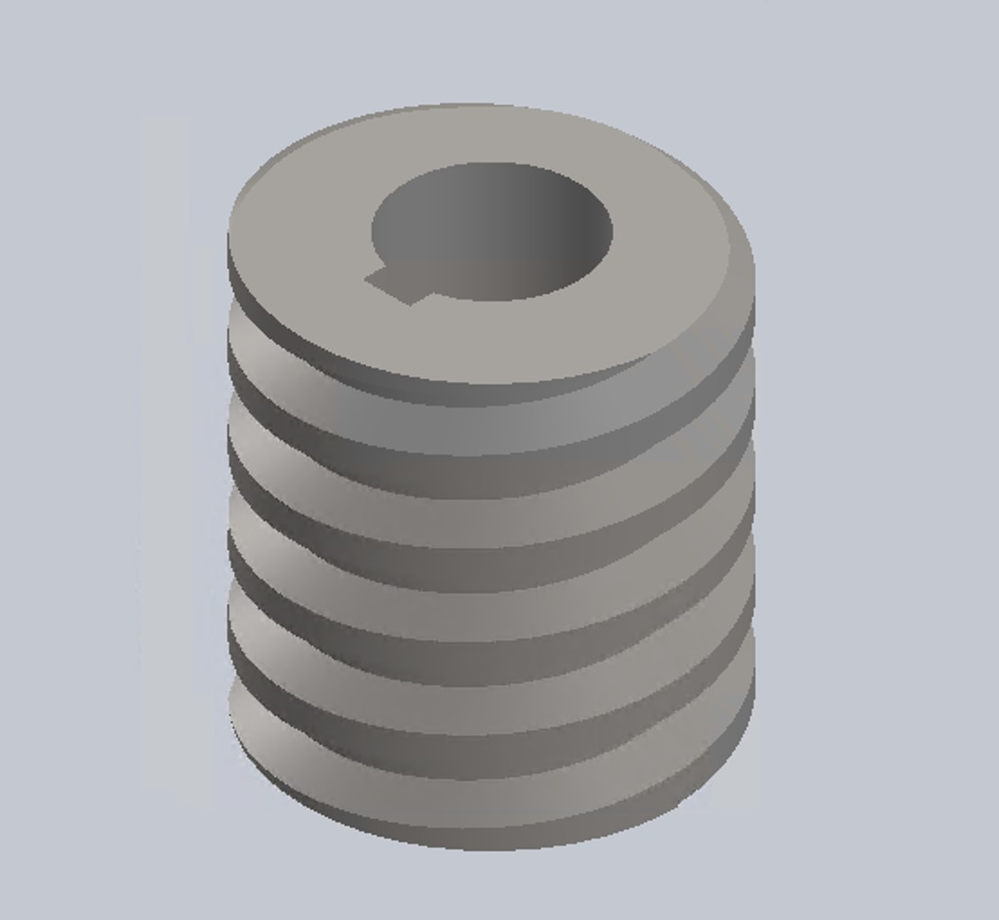
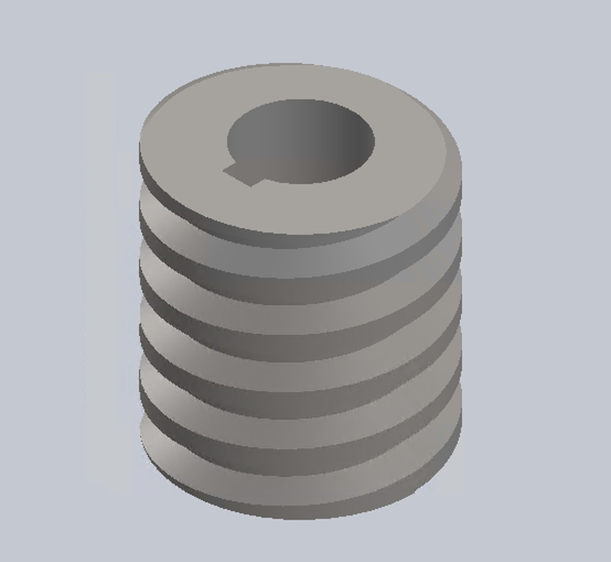

Vehicle Gear and Holder Design
About
This project engineered a high-precision gear and holder system for a snowmobile blade, blending cutting-edge simulation and rapid prototyping to redefine design optimization under extreme conditions.
Task/Action
- Directed a multidisciplinary effort to model over 100 intricate components in SolidWorks, generating precise 2D technical drawings and employing finite element analysis (FEA) to validate structural integrity under dynamic loads.
- Implemented Design for Manufacturability (DFM) strategies, optimizing part geometry and tolerances to reduce production costs by 10% while maintaining stringent quality standards.
- Led cross-functional collaboration with materials engineers and machinists to design a blade assembly system, integrating a novel kinematic alignment mechanism that improved assembly consistency by 25%, reduced part rejection rates by 20%, and increased throughput by 15%.
- Conducted comprehensive failure mode and effects analysis (FMEA), identifying critical stress points via thermal and vibrational simulations, then iterating designs with advanced root-cause correction techniques to enhance durability.
- Performed a holistic impact assessment—spanning safety (ASME compliance), environmental (material recyclability), and legal (IP considerations)—to ensure the solution’s viability in real-world deployment.
Result
Achieved a fully functional blade system with 99.9% dimensional accuracy—lauded as “one of the most accurate designs” by peers—delivering unmatched reliability in harsh snowmobile environments.
Tech Stack: SolidWorks, FEA Simulation, DFM Principles


 

